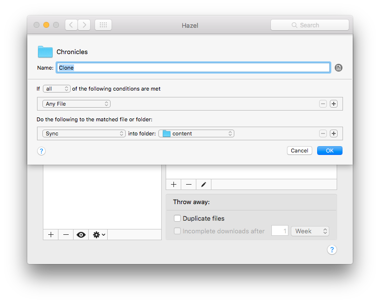
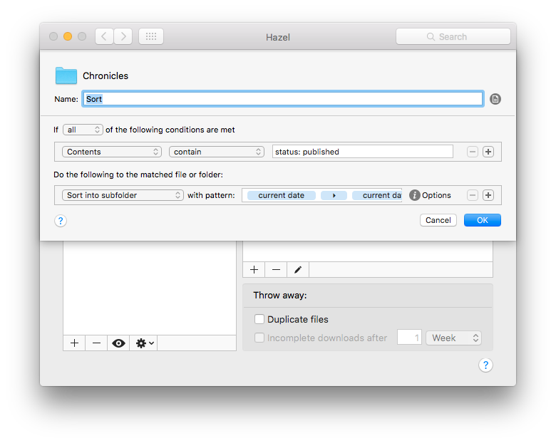

Starting with Hazel
Category: productivity
#misc
 I write all of my blog post in markdown and store them in a folder in dropbox. From there, I use pelican to turn the files into a webpage. The steps would be...
- Open Byword or MultiMarkdown Composer
- Write the post
- Remember the textexpander snippet that I created for post headers because I don't post as often as I used to
- Save the file
- Copy the file to location where I have pelican looking1
- Generate the site
- Publish the site by copying the generated file to the proper git repository
- Push the repository
- Check that all the links work
Anyway, I decided that I've already bought tons of productivity tools and should use them for what they are for. I had a couple workflows in the past but not saving them while I switch between betas causes the system to falter.
It's not the complicated rule set, but it certainly a start and makes me happy that I'm actual using the things that I've bought.

-
This is my fault for not setting up pelican to auto publish. I just want to make sure that everything works locally before I send it out to my millions of fans. ↩